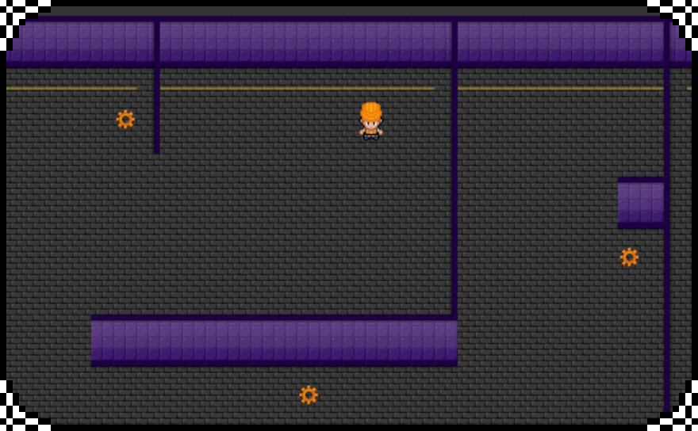
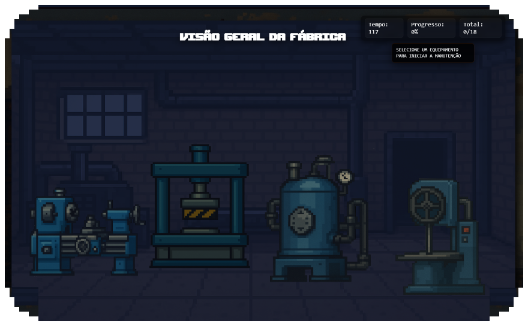
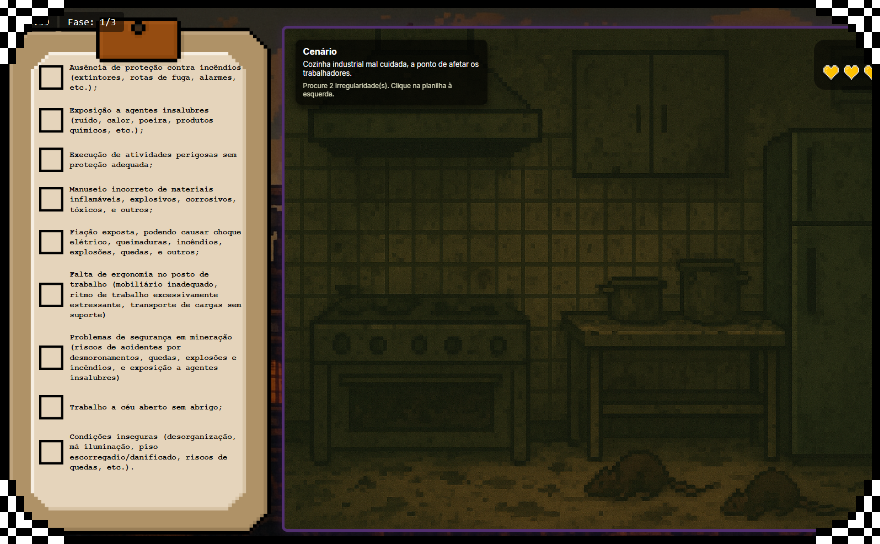

Visando ajudar empresas a transformar sua cultura de segurança através de mentalidade preventiva, com treinamentos gameficados e engajantes, Safe Tech criou o jogo “Safety Zone”.
Composto de 5 minijogos, engloba situações divesas que conectam o ambiente de trabalho com segurança do trabalhador, instigando o jogador a compreender o uso correto de equipamentos de segurança, a identificar situações de risco e a lidar com acidentes e zonas de risco.
Dessa maneira, pode ser aplicado em empresas para amenizar acidentes, e consequentemente, despesas e indenizações, como também para motivar equipes a cuidar do próximo de maneira mais humanizada.
Engloba as NRs:
1, 2, 3, 8, 9, 10, 26 e 28.
RECOMPENSA

Medalha de "Fiscal de Segurança"
Para ganhar esse minijogo, é necessário que o jogador complete todas as tarefas dispostas pelo mapa. Ele não é cronometrado, estruturado por vidas ou com uma pontuação específica. O objetivo principal é mostrar as possíveis irregularidades de um ambiente de trabalho não seguro, de maneira que o jogador consiga associar diferentes ambientes com os seus riscos.
Caso o jogador não complete todas as tarefas, ele não receberá a recompensa da fase, impossibilitando a conclusão total do jogo como um todo.
Explorando o mapa, o jogador age como um fiscal, inspecionando as diferentes áreas da fábrica. Através deste, intenciona-se informar o jogador sobre possíveis riscos no ambiente de trabalho, focando na resolução dos mesmos, de maneira calma e responsável.
O jogador deve associar maquinários aos seus nomes e corrigir irregularidades que eles apresentam. Através deste, intenciona-se informar o jogador sobre possíveis irregularidades em maquinários industriais, focando na resolução das mesmas.
Engloba as NRs:
12, 13 e 14.
RECOMPENSA

Medalha de "Manutentor de Excelência"
Para ganhar esse minijogo, é necessário que o jogador conserte corretamente, pelo menos, 70% das irregularidades. Não há vidas nesse jogo, porém ele é cronometrado e com fase única, sendo ela complexa e com tempo limitado. A pontuação referente a quantidade de irregularidas consertadas é mostrada em forma de porcentagem após o minijogo ser finalizado, sendo possível visualizar o tempo restante no canto superior esquerdo da tela.
Caso o jogador não conserte corretamente, pelo menos, 70% das irregularidades, ele não receberá a recompensa da fase, impossibilitando a conclusão total do jogo como um todo.
Engloba as NRs:
15, 16, 17, 18, 19, 20, 21, 22 e 23.
RECOMPENSA

Medalha de "Supervisor de Segurança"
Para ganhar esse minijogo, é necessário que o jogador fique com pelo menos uma vida até o final de todos os cenários dentro do tempo estipulado. Não há pontuação , sendo estruturado por fases, vidas e com cronômetro. Cada fase (3 no total) engloba 5 cenários e dura 1 minuto. As vidas são acumulativas, iniciando com 5 vidas e perdendo 1 a cada irregularidade não encontrada ou marcada incorretamente. Quando ele passa para a próxima fase, ele ganha mais 5 vidas e tem as da fase anterior somadas com as novas.
Caso o jogador perca todas as vidas ou o tempo acabe, ele não receberá a recompensa da fase, impossibilitando a conclusão total do jogo como um todo.
O jogador deve analisar ambientes de trabalho e marcar um "check" apenas naquilo que o ambiente apresenta, deixando os itens ausentes em branco. Através deste, intenciona-se aumentar o senso de percepção do jogador diante de cenários de trabalho e as condições que devem apresentar.
O jogador é apresentado a trabalhadores que passarão por situações de risco que exigem EPIs, devendo associar a descrição que o trabalhador da de sua profissão e situação com a função de cada EPI. Através deste, intenciona-se informar o jogador sobre o uso dos EPIs corretos em diferentes situações nos mais variados locais de trabalho.
Engloba as NRs:
11, 29, 30, 31, 32, 33, 34, 35, 36, 37 e 38.
RECOMPENSA

Medalha de "Especialista em EPIs"
Para ganhar esse minijogo, é necessário que o jogador finalize a última fase com pelo menos uma vida. Ele não é cronometrado e não tem uma pontuação específica, sendo estruturado por fases e vidas. O jogador inicia o minijogo com 5 vidas, sendo que ele perde 1 vida a cada EPI errado. Quando ele passa para a próxima fase, ele ganha mais 5 vidas e tem as restantes da fase anterior somadas com as novas. Além disso, o minijogo tem 3 fases, cada uma com 5 situações diferentes.
Caso o jogador perca todas as vidas, ele não receberá a recompensa da fase, impossibilitando a conclusão total do jogo como um todo.
Engloba as NRs:
24, 25 e 38.
RECOMPENSA

Medalha de "Limpeza de Alta Performance"
Para ganhar esse minijogo, é necessário que o jogador finalize toda a limpeza e organização dentro do tempo estipulado pelas fases. Não há pontuação ou vidas, sendo que o minijogo é estruturado por fases e cronômetro. Com três fases, cada uma com 5 ambientes e um nível de dificuldade diferente baseado na quantidade de resíduos a serem coletados e materiais a serem organizados, cada fase possuí um cronômetro de 3 minutos, sendo o mesmo reiniciado quando o jogador passa para a próxima fase.
Caso o tempo acabe antes do jogador arrumar todas as irregularidades, ele não receberá a recompensa da fase, impossibilitando a conclusão total do jogo como um todo.
O jogador deve separar os resíduos corretamente e limpar ambientes com condições insalubres, selecionando as lixeiras adequadas, organizando ferramentas e equipamentos. Através deste, intenciona-se informar o jogador sobre possíveis ambientes de trabalho contendo condições precárias para o trabalho.

Apenas para os jogadores que completarem todos os minijogos, consequentemente, possuirem todas as medalhas.
Quer acessar
nosso jogo?
Clique abaixo: